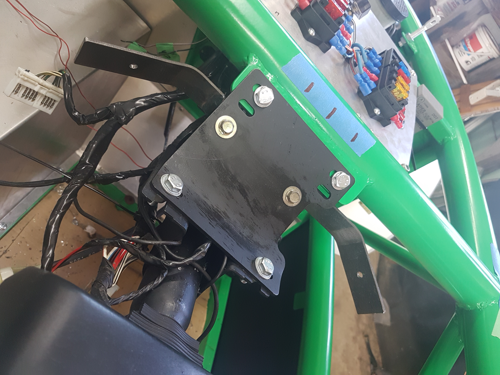
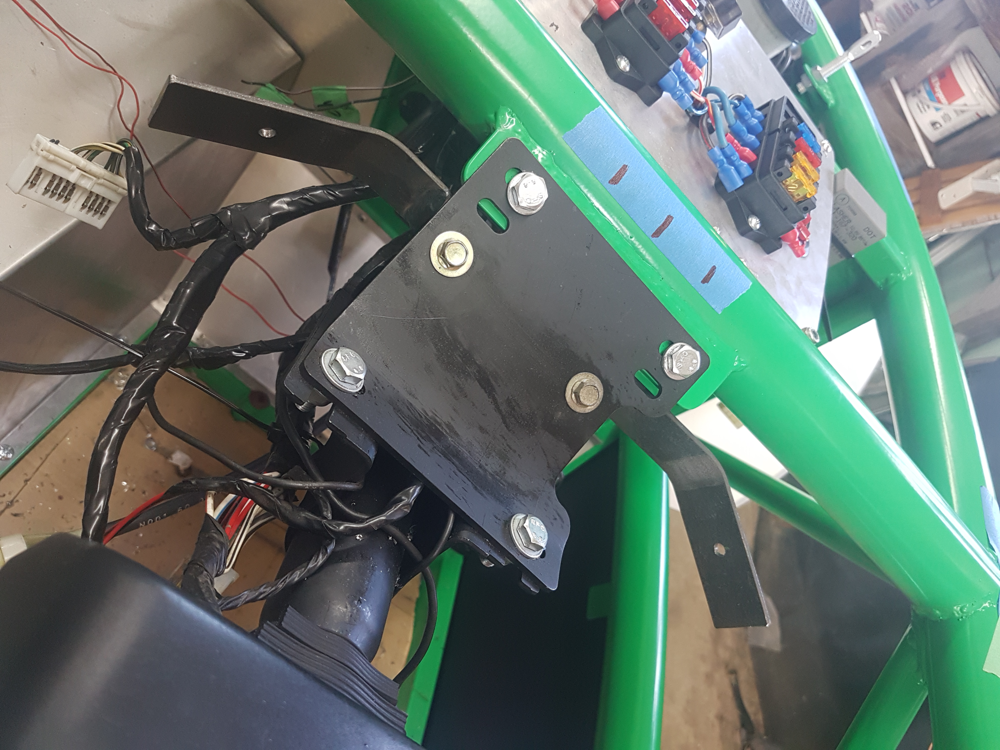

Dash Mounting
Contents / Dash Mounting
- Note, if you want to change gauge faces etc do this now.
- Cut off the white mounting tabs to allow the cluster to fit inside the gauge pod.
- Remove the front of the dash cluster (10 plastic clips around the edge). Store carefully as to not get damaged/dirty.
- When adhesive dry clip the dash back inplace. Note it will be very difficult to remove again.
- Using PU adhesive glue the the front of the cluster in place, ensure square and central.
- Add some sticky back foam to the top of the ignition barrel mount plate for the front of the dash.
- Sit the dash in place, add masking tape to the chassis rail and the back of the gauge pod, drop lines to enable easy lining up again.
- Cut a piece of 3x30mm steel to aprx 370mm.
- Bend the ends up aprx 30 degrees at 70mm from each end, this piece should then fit in the back of the gauge pod, tweak angles as required.
- Mark equal distances in from lower rear edge of pod eg 20mm in, 15mm up.
- Drill with a stepper drill to 6mm.
- Fit the steel back in place, mark the holes, indicate which side is which, remove and drill 6mm holes.
- Cut 2 70mm pieces of the same material.
- Bend this back on itself to have a internal angle of aprx 70degrees.
- Fit the dash in place by your lines earlier, attach the steel to the pod (behind the steering bracket)
- Offer the 2 small pieces between the steering bracket and the pod bracket, tweak bends as required, mark position.
- Remove bracket, and weld together on the marks (drill and bolt if you prefer not to weld)
- Refit bracket, G clamp in place, fit guage pod + adjust as required.
- Remove guage pod leaving bracket
- Drill for 2 M8 Bolts and nuts.
- Paint and reassemble. Remember to connect speedo cable and wiring.
 
